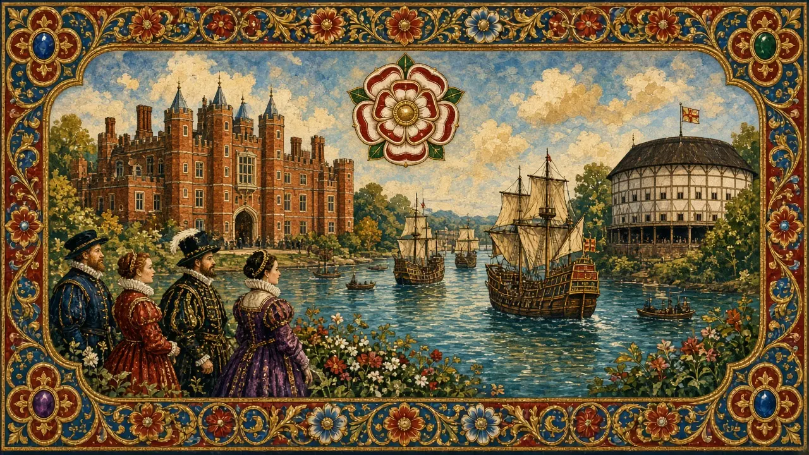
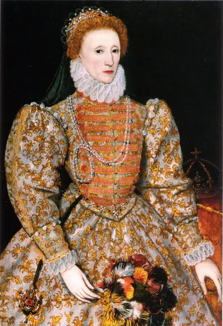

Elizabeth I
The Virgin Queen — survival, the Armada and a golden age of theatre.
England · Reigned 1558–1603 · Stop 40 of the odyssey
← Learning from the Past: An English Odyssey · ← Mary I · James I (and VI) →

- What makes a speech memorable?
- Why might a ruler choose not to marry?
- What is a "golden age"?
The words for today's story
Each new word is hidden in a sentence. Read it aloud and say what you think the bold word means from the rest of the sentence — then reveal it and see how close you were.
Now use them — out loud
- Using any four of these words, predict: what kind of reign do you think this will be — and how might it end?
- Which words belong to power and which to danger? Sort them out loud and say why.


Credit: Unidentified painter, credited creator · via Wikimedia Commons, Public domain
The story, in three parts
Read each part. After it, there's a quick comprehension check (try the questions from memory first), then one thing to discuss.
Part 1 — The survivor
Elizabeth, daughter of Henry VIII and Anne Boleyn, was imprisoned in the Tower under Mary after Wyatt's Rebellion. In 1558 she became queen. Her religious settlement made England Protestant but tried to avoid extremes.
1. Where was Elizabeth imprisoned?
2. What did her settlement do?
1. In the Tower of London.
2. Made England Protestant while avoiding extremes.
- How might prison shape a future queen?
Part 2 — Plots and the Armada
Elizabeth's Catholic cousin Mary, Queen of Scots, fled to England in 1568 and became the centre of plots. After the Babington Plot, Mary was executed in 1587. In 1588 Philip II sent the Spanish Armada. English fireships at Calais and storms scattered it.
At Tilbury, Elizabeth reportedly told her troops that though she had the body of a weak woman, she had the heart and stomach of a king.
1. Why was Mary, Queen of Scots executed?
2. What did Elizabeth say at Tilbury?
1. She was involved in plots against Elizabeth.
2. That she had the body of a weak woman but the heart and stomach of a king.
- Why is this speech still remembered?
Part 3 — The golden age
Elizabeth's reign saw Shakespeare and Marlowe, explorers like Drake, and growing trade. She never married, perhaps to keep power and avoid foreign influence. She died in 1603, the last Tudor.
1. Name a playwright of her time.
2. Why might she not have married?
1. Shakespeare or Marlowe.
2. To keep power and avoid foreign influence.
- What would a husband have changed?
Grammar — Reported Speech
Much of what we know about the past comes from chroniclers reporting what people said. Reported speech moves the tense back and changes the pronouns.
• "I will return," he said → He said that he would return.
• "We have lost," she said → She said that they had lost.
• Reporting verbs: claimed, promised, warned, insisted, denied.
1. Report the words
Complete each sentence about Elizabeth I. Use the word in brackets.
1. She said, "I have the heart of a king." → She said that she the heart of a king.
2. She told them, "I will live and die among you." → She told them that she and die among them.
3. The Spanish said, "We will conquer England." → They said that they England.
1. had
2. would live
3. would conquer
2. Choose the reporting verb
1. She that she was married to England. (claimed / denied)
2. Mary that she had planned the queen's murder. (denied / promised)
3. Drake to finish his game of bowls first, says legend. (insisted / denied)
1. claimed
2. denied
3. insisted
Hold on to this — you'll need it in the Speak tab.
Going deeper
Elizabeth managed image brilliantly — portraits, progresses and speeches. Her reign had problems too: war costs, poverty and executions.
- Was it a golden age?
- Should she have married?
- How do you manage your "image"?

Stop 40 on the journey → rose. In the Major System Palace, 40 is spelled with the sounds r-z, which make rose (a red rose).
Picture a single red Tudor rose pinned to Elizabeth's armour at Tilbury — stop 40.
You don't need the system to follow the story — it's simply a hook that lets you walk the whole odyssey, king by king, in order.
Speak
This is the heart of the lesson — do all of it out loud. The timer is there to keep you going: fill the time with detail rather than escaping it.
Tell the story of Elizabeth I in your own words, as if to someone who has never heard of them. Move through the arc: the survivor → the settlement → Mary and the Armada → the golden age.
Use today's grammar at least three times, and work in at least five key words (survive, settlement, Armada, fireships, plot, execute, golden age, playwright, the Virgin Queen, portrait).
Give a short Tilbury-style speech to inspire your team.
Tell a story from your own world — work, family, the news — that echoes this reign. Stuck for an idea? Pick one of these and run with it:
- A famous speech.
- A time someone survived danger.
- A leader who controlled their image.
- A cultural golden age.
To finish — the bigger questions
- What made Elizabeth successful?
- How do you present yourself at work?
- Before you go — from memory: give two sentences about Elizabeth I using Reported Speech, and say what lesson from this reign you could use this week.
← Learning from the Past: An English Odyssey · ← Mary I · James I (and VI) →